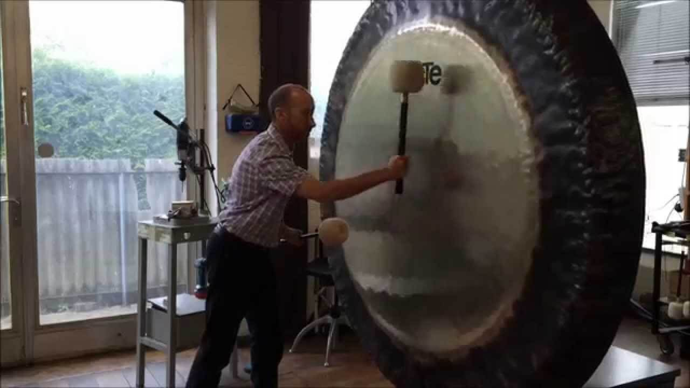

El Gong.
Según la clasificación organológica de Hornbostel y Sachs (1914), los gongs son idiófonos; es decir instrumentos en los que el sonido se produce mediante la vibración del propio cuerpo del instrumento. Esa producción y, por ende, la forma en la que se genera el sonido, diferencia al gong de campanas, platillos o címbalos. La vibración máxima se da en el centro del disco, siendo ésta más débil o nula en el borde (en el caso de los otros instrumentos mencionados, el punto de máxima vibración se alcanza en los bordes).

El Gong es uno de los instrumentos musicales de percusión más legendarios de toda china. Es un disco que en algunas ocasiones puede ser plano, algo abombado y también hay los que tienen en el centro una protuberancia que tiene el nombre de pezón y del cual el legendario instrumento es considerado muy popular en el extremo oriente de china.
El gong es un instrumento formado por una gran plancha metálica circular de diversas aleaciones, que una vez percutida posee una gran capacidad de resonancia y una profundidad de sonido más amplia que la de los platos, resultando una calidad sonora más redonda.
Origen del Gong.
El gong es un instrumento sagrado y ancestral utilizado desde hace miles de años para la sanación, el rejuvenecimiento y la transformación. Es una herramienta única para alcanzar altos estados de meditación y conciencia. El origen se de este instrumento se remonta al 500 a.C.
Este instrumento chino era muy utilizado en una nación donde se le conocía con el nombre de HSI YU. Esta nación estaba ubicaba entre el Tíbet y Birmania y fue durante la época donde gobernaba el grande y reconocido emperador, Hsuan Wu.
Tras mucho investigar podemos decir que el Gong se encontraba en cuatro ciudades principales, Birmania, China, Annam y Java, de las cuales tuvo al menos siete formas distintas. La composición del sonido era muy diferente en cada una de estas regiones.
Recientes investigaciones en arqueología e Historia de Asia -como las publicadas por Arsenio Nicolás en 2009- se han centrado en el papel del mar y el comercio marítimo como medio de intercambio musical, interconectando el Sudeste asiático con China, India, África y el Mediterráneo al Norte y Oeste, y con Oceanía y América al Este.
Historia del Gong.
Aunque el Gong no solo tiene la finalidad de un instrumento musical, algunas personas desde hace muchos años le atribuyen poderes sobrenaturales para sanar a cualquier persona y también para eliminar espíritus malignos. Todo esto se puede hacer gracias a los rituales que se realizan, que van desde una simple danza a una ceremonia fúnebre y otro tipo de rituales más.
Surge en la edad de bronce cuando las primeras aleaciones de cobre y estaño crearon discos metálicos. Al percutir sobre estos discos se creaba una resonancia nunca oída hasta el momento uno de los primeros usos del gong fue en ritos funerarios para ayudar a elevar el alma de las personas que habían abandonado este plano físico. En la antigua Grecia abrían el cielo de los muertos. En Assam India. Se utilizan con las piras funerarias.
El Gong se considera mágico por muchas civilizaciones. Se utilizaban para curar a los enfermos, para expulsar a los malos espíritus, y convocara a los elementos. Incluso se creía que con el toque del Gong se podía liberar al cuerpo de la enfermedad y dar felicidad y fuerza a quien lo recibe. En las ceremonias rituales y viajes interiores entre todos los pueblos del mundo. Las muertes, nacimientos, matrimonios y las iniciativas emprendedoras eran acompañados por el sonido del Gong.
El Gong es una perfecta fuente de resonancia holística que produce múltiples tonos en un espectro continuo de sonido. La experiencia es como estar envuelto en una crisálida pudiendo llega a sentir como te fundes dentro del campo de sonido (desmaterialización consciente). Hace que la puerta hacia lo imposible. Actúa como un Gura que conecta con su Ser para que se despierte en su memoria la información latente en su interior, así podrás hacerla consciente, desarrollarla y perfeccionarla. El Gong nos lleva rápida y eficazmente aun espacio pleno de calma mental.
Función del Gong.
El verdadero arte este instrumento chino fue velado en la magia, pues muchos de los fabricantes de épocas pasadas llegaban a decir que la función de este instrumento solo podía tener éxito si estas estaban mezcladas con los poderes de los seres superiores, puesto que son instrumentos que son expuestos a tales fuerzas que ningún ser humano podría aguantar.
Sonido del Gong.
El Gong instrumento musical utilizado muy frecuentemente para celebraciones y ceremonias fúnebres, además de canciones y obras de teatro. Para las altas culturas asiáticas el gong era un instrumento usado en orquestas musicales, donde incluso se le daba un uso exclusivo en las fiestas privadas.
El sonido que emite el Gong se crea gracias al golpe que se le da al platillo de metal con el mazo. Es por esta razón que el sonido emitido está muy relacionado con los términos de sanación, ya que el tono que este emite no es algo normal, sino más bien es una onda con poderes mágicos.
Tocar el Gong.
El Gong es el instrumento chino que se caracteriza por ser un disco metálico de espesor variable y con un borde recurvado, que va suspendido de un borde metálico y que para emitir un sonido es necesario golpearlo con un mazo. Algunos de estos instrumentos tienen en el centro una protuberancia del cual se le conoce como “Pezón” y este al ser golpeado puede producir un sonido llegando a una altura muy determinada.
Este instrumento tiene la característica que para emitir un sonido solo tiene que ser golpeado por el mazo, ¿muy fácil verdad?, pero detrás de todo esto existe una variedad de técnicas para que el sonido tenga los resultados que muchos esperan. Este instrumento pasa de generación en generación, es por esta razón que no es tan fácil de aprender. A continuación te daremos a conocer las técnicas que te harán todo un experto usando este fabuloso instrumento musical.
{kind=link}